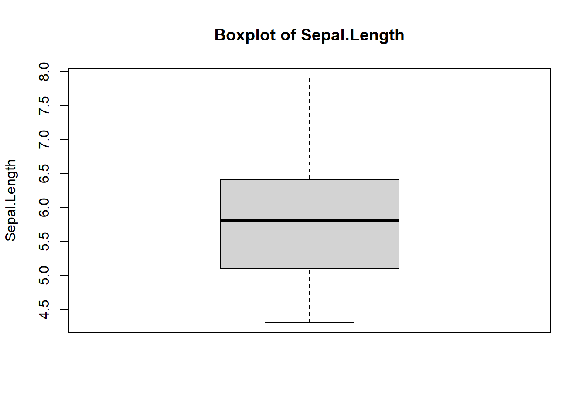
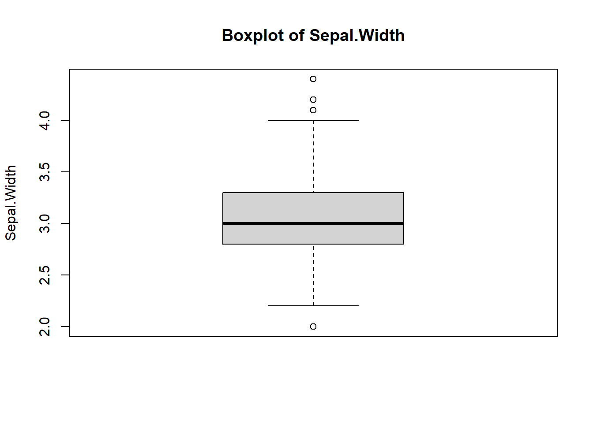
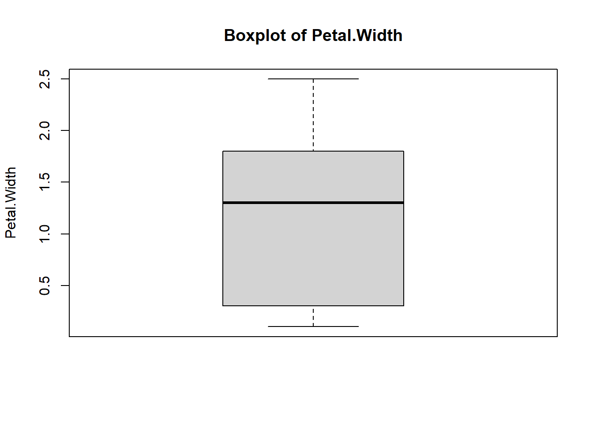
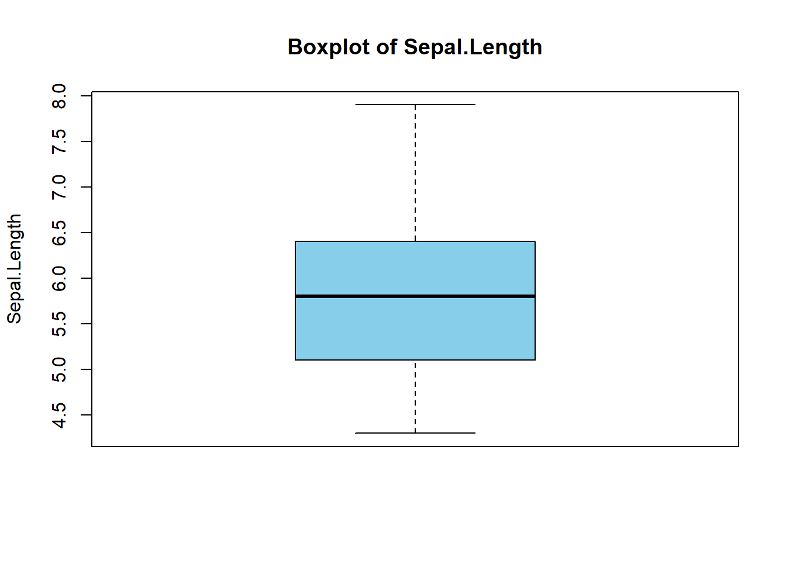
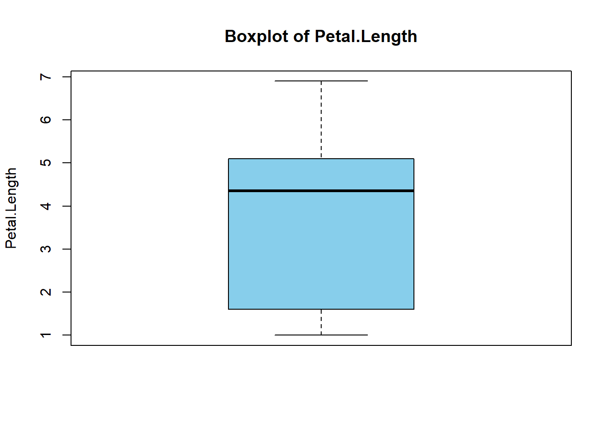
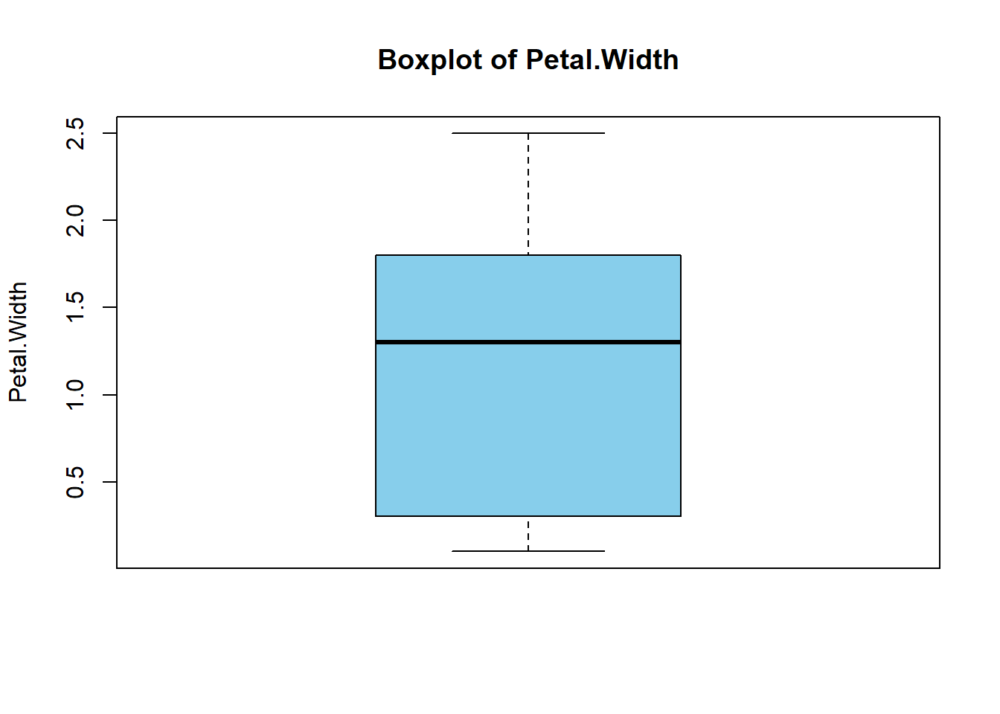

library(tidyverse)7 Efficient coding
“I think you can have a ridiculously enormous and complex data set, but if you have the right tools and methodology, then it’s not a problem.”
– Aaron Koblin
This chapter covers how to write a clear, concise, and optimized code to handle data and computations effectively in R. We going to cover what is a loop, how to make a function, and how to use an apply family function. For beginners, this chapter will be quite challenging. So, it is completely understandable if you need to read this chapter several times. In fact, you are free to skip this chapter for the time being, and come back again once you become more familiar with R.
Mastering the topics such as a loop, apply family and functions is crucial especially once you become more advanced in using R. More often than not, you will have a large data and you need to repeat the analysis several times, thus, knowing these topics, makes the R codes more efficient and concise (though not completely readable to beginners).
This chapter does not aim to cover everything on these topics. However, this chapter intends to provide a brief introduction to these topics for beginners and novices in R.
7.1 Load packages
Please load a tidyverse package before moving to the next section.
7.2 Loop
A loop is utilised in the case of an iterative process. Generally, there are two types of loops:
- For loop
- While loop
A for loop iterate iterates over a sequence. The general structure of the for loop is:
for (variable in sequence) {
# Code to execute
}For example, if we want to add 1 over a sequence of numbers:
# Number sequence 1 to 10
num_seq <- 1:10
num_seq [1] 1 2 3 4 5 6 7 8 9 10# Make a for loop that adds 1 to each number in the sequence
for (i in num_seq) {
i = i + 1
print(i)
}[1] 2
[1] 3
[1] 4
[1] 5
[1] 6
[1] 7
[1] 8
[1] 9
[1] 10
[1] 11i reflects each number in the number sequence, while print() will print each number after 1 is added.
Now, let’s try something more related to the data analysis. We going to use the iris dataset for this example. For those who might not be familiar, the iris dataset, is a built-in dataset in R. Further details can be read on the Help pane by typing ?iris.
We going to calculate the mean for each numeric column in the iris dataset.
# Loop through numeric columns of the iris dataset
for (col in names(iris)[1:4]) {
# Calculate the mean of the current column
column_mean <- mean(iris[[col]])
# Round the mean to 2 decimal points
column_mean <- round(column_mean, digits = 2)
# Print the column name and its mean
print(paste("Mean of", col, "is", column_mean))
}[1] "Mean of Sepal.Length is 5.84"
[1] "Mean of Sepal.Width is 3.06"
[1] "Mean of Petal.Length is 3.76"
[1] "Mean of Petal.Width is 1.2"Additionally, we can use for loop to do several plots. For example, we can plot a boxplot for each numeric column in the iris dataset.
# Select numeric columns only from iris
df <- iris[, -5]
# Loop through numeric columns of the iris dataset
for (col_name in names(df)) {
# Create a boxplot
boxplot(df[[col_name]],
main = paste("Boxplot of", col_name),
ylab = col_name)
}


Thus, integrating a for loop in the data analysis code will make it more efficient. Next, let’s see what is a while loop.
The while loop executes a block of code as long as a specified condition remains true. A general structure of the while loop is:
while (condition) {
# Code to execute
}As a basic example of the while loop, we can add 1 to the sequence of numbers as long as the number is below 10.
# Initialise the number
count <- 0
# A while loop that adds 1 to each number as long as the number is less than 10
while (count < 10) {
count <- count + 1
print(count)
}[1] 1
[1] 2
[1] 3
[1] 4
[1] 5
[1] 6
[1] 7
[1] 8
[1] 9
[1] 10So, as long as the count is not equal to 10, the while loop will keep adding 1 to the count. Next, let’s try the while loop which is more related to the data analysis. By using the iris dataset, let’s say we want to calculate the cumulative sum of Sepal.Length until the sum exceeds 60.
# Initialize variables
index <- 1 #index for looping
cumulative_sum <- 0 #variable to hold the cumulative sum
# While loop to calculate the cumulative sum
while (cumulative_sum <= 60 && index <= nrow(iris)) {
# Calculate the cumulative sum starting with the 1st row
cumulative_sum <- cumulative_sum + iris$Sepal.Length[index]
# Move to the next row
index <- index + 1
# Display the result
print(paste0("Row ", index - 1, ", Cumulative sum: ", cumulative_sum))
}[1] "Row 1, Cumulative sum: 5.1"
[1] "Row 2, Cumulative sum: 10"
[1] "Row 3, Cumulative sum: 14.7"
[1] "Row 4, Cumulative sum: 19.3"
[1] "Row 5, Cumulative sum: 24.3"
[1] "Row 6, Cumulative sum: 29.7"
[1] "Row 7, Cumulative sum: 34.3"
[1] "Row 8, Cumulative sum: 39.3"
[1] "Row 9, Cumulative sum: 43.7"
[1] "Row 10, Cumulative sum: 48.6"
[1] "Row 11, Cumulative sum: 54"
[1] "Row 12, Cumulative sum: 58.8"
[1] "Row 13, Cumulative sum: 63.6"The conditions in the while loop above are:
- The loop will run until the cumulative sum exceeds 60
- Or the last row of the dataset is reached.
The last line of the codes is just to print the result. For now, you do not actually need to understand it.
Generally, the for loop is more popular and commonly used compared to the while loop. However, knowing both loops, at least at the basic level will definitely benefit you in future. Additionally, the loop functions are not only available in R but in other programming software such as Python, Julia, MATLAB and Stata.
7.3 Apply
The apply family function in R is utilised to apply a specific operation over elements of data structures such as vectors, matrices, and data frames. This function is relatively similar to the loop function. However, in R, generally, the apply family functions are faster and more efficient compared to the loop functions.
There are 7 types of apply family functions:
apply(): applies a function over rows or columns of a matrix or array.lapply(): applies a function to each element of a vector, data frame or list and returns a list.sapply(): similar tolapply()but tries to simplify the result (e.g., into a vector or matrix).vapply(): similar tosapply(), but requires specifying the output type.mapply(): multivariate version ofsapply(), applying a function to multiple arguments.tapply(): applies a function over subsets of a vector grouped by a factor.rapply(): recursive version oflapply()for nested lists.
We are not going to cover all the apply family functions in this book, but we going to cover the top three apply family functions (apply(), lapply(), sapply()).
apply() function
The apply() is used to apply the function over rows or columns. The basic syntax is:
apply(X, MARGIN, FUN, ...)The basic arguments that we need to supply:
X: an array.MARGIN: where the function should be applied, 1 is at row, and 2 is at column.FUN: the function.
Let’s try applying this function to our iris dataset. Let’s say we want to calculate the mean for each numeric column in the dataset.
apply(iris %>% select(-Species), MARGIN = 2 , FUN = mean)Sepal.Length Sepal.Width Petal.Length Petal.Width
5.843333 3.057333 3.758000 1.199333 MARGIN = 2 indicates we want the mean of columns. If we set MARGIN = 1 means that we want the mean of each row.
lapply() function
The lapply() applies a function to each element of a list and returns a list. The basic syntax is:
lapply(X, FUN)Where:
X: a vector, data frame or a list.FUN: the function.
As an example of lapply(), we can find the mean of each column and see the result is returned in a list format.
lapply(iris %>% select(-Species), FUN = mean)$Sepal.Length
[1] 5.843333
$Sepal.Width
[1] 3.057333
$Petal.Length
[1] 3.758
$Petal.Width
[1] 1.199333sapply() function
The sapply() function is similar to the lapply(), but it simplifies the result. The syntax is similar to the lapply().
Let’s use the same example as in the lapply() section and see how is the output is formatted.
sapply(iris %>% select(-Species), FUN = mean)Sepal.Length Sepal.Width Petal.Length Petal.Width
5.843333 3.057333 3.758000 1.199333 The output is formatted in a more simplified, and in this case, the output format is similar to the one in the apply() function section.
So, we have seen three functions from the apply family functions. As the example in the for loop, we can also use the apply family function to plot several plots.
7.3.1 purrr
purrr package is part of tidyverse, which contains many functions that are equivalent to base R apply family functions.
The equivalent of lapply() function is map().
map(iris %>% select(-Species), .f = mean)$Sepal.Length
[1] 5.843333
$Sepal.Width
[1] 3.057333
$Petal.Length
[1] 3.758
$Petal.Width
[1] 1.199333There are many more functions in the purrr package that are highly beneficial to learn. However, most of these functions are more advanced and require a deeper understanding of R, which goes beyond what is covered in this book. As such, they may not be suitable for beginners and novices at this stage.
7.4 Function
One of the flexibility in R is we can make our own function. Let’s make a basic function that adds two numbers.
add_num <- function(number1, number2) {
result <- number1 + number2
return(result)
}Next, let’s try the function.
add_num(number1 = 100, number2 = 200)[1] 300Let’s upgrade our function, instead of adding the number, we going to calculate the mean of the numbers.
avg_num <- function(x_range) {
# Sum of all elements in the vector
sum_x <- sum(x_range)
# Determine the number of elements in the vector
n <- length(x_range)
# Calculate mean
mean_value <- sum_x / n
# Return the mean
return(mean_value)
}Let’s try our function using the iris dataset, and compare it with the mean() in the base R.
# Our function
avg_num(iris$Sepal.Length)[1] 5.843333# Mean function in R
mean(iris$Sepal.Length)[1] 5.843333Additionally, we can also integrate the R functions in our own function. Let’s say we want to build a function that can return the value of mean, standard deviation (SD), median, and interquartile range (IQR). Instead of typing the function one by one every time we need it, we can create a function that gives us the four statistical measures. So, it is more efficient to create this function if we need to run it more than two times. For those who are not familiar with these statistical measures, you can just ignore them for now as we will cover it in the later chapter.
summary_func <- function(x_range) {
# Calculate mean and standard deviation, then round the decimal points to 2
mean_val <- mean(x_range) |> round(digits = 2)
std_val <- sd(x_range) |> round(digits = 2)
# Calculate median and interquartile range, then round the decimal points to 2
med_val <- median(x_range) |> round(digits = 2)
iqr_val <- IQR(x_range) |> round(digits = 2)
# Display the result
return(c(
`Mean (SD)` = paste0(mean_val, " (", std_val, ")"),
`Median (IQR)` = paste0(med_val, " (", iqr_val, ")")
))
}Now, we have the function ready. Let’s test out on the iris dataset.
summary_func(iris$Sepal.Length) Mean (SD) Median (IQR)
"5.84 (0.83)" "5.8 (1.3)" Perfect! Now, every time we want to calculate the mean, SD, median, and IQR for any column, we can just call our function.
To be more efficient we can combine our function with loop or apply family functions that we have learnt in the previous sections. Instead of running summary_func() one by one for each column in the iris dataset, we integrate it in the for loop.
# Loop through numeric columns of the iris dataset
for (col in names(iris)[1:4]) {
# Calculate mean of the current column
res <- summary_func(iris[[col]])
# Print the result
print(res)
} Mean (SD) Median (IQR)
"5.84 (0.83)" "5.8 (1.3)"
Mean (SD) Median (IQR)
"3.06 (0.44)" "3 (0.5)"
Mean (SD) Median (IQR)
"3.76 (1.77)" "4.35 (3.5)"
Mean (SD) Median (IQR)
"1.2 (0.76)" "1.3 (1.5)" In R, it is more efficient to use the apply family functions. Let’s use sapply() for this.
sapply(iris |> select(-Species), FUN = summary_func) Sepal.Length Sepal.Width Petal.Length Petal.Width
Mean (SD) "5.84 (0.83)" "3.06 (0.44)" "3.76 (1.77)" "1.2 (0.76)"
Median (IQR) "5.8 (1.3)" "3 (0.5)" "4.35 (3.5)" "1.3 (1.5)" What we have learned just now, is known as named function. It is probably the most commonly used function.
7.4.1 Anonymous function
There is another type of function in R, known as the anonymous function. It is defined without a name and is often used temporarily.
For example, let’s create an anonymous function that squares a number.
function(x) { x^2 }So, to use this function, we need to type the whole function again. In contrast, the named function can be called by the name of the function to be reused.
function(x) { x^2 }(3)An example of a practical use of the anonymous function is to be used in line with apply family functions. For example, if we want to square the range of numeric values.
sapply(1:10, function(x) x^2) [1] 1 4 9 16 25 36 49 64 81 100Another example of using anonymous functions with the apply family is to generate multiple plots, similar to the example in the for loop section. In this case, we will use walk(), which is the equivalent of the apply family function available in purrr package. Let’s create a boxplot for each numeric column in the iris dataset using walk() and anonymous function.
# Select numeric columns only from iris
df <- iris[, -5]
# Create boxplots for each numeric column using walk
walk(names(df), function(col_name) {
boxplot(df[[col_name]],
main = paste("Boxplot of", col_name),
ylab = col_name,
col = "skyblue")
})


The function function(col_name) defines an anonymous function to process each column name in names(df). Using walk() allows us to generate multiple boxplots, as it executes the function for its side effects without returning any output. In contrast, using lapply() for this task would return additional information, specifically the statistics for each boxplot, alongside creating the plots.
To observe this difference, try running the code below on your machine and compare the behaviour of `walk()` and `lapply()` in this context.
# Select numeric columns only from iris
df <- iris[, -5]
# Create boxplots for each numeric column using lapply
lapply(names(df), function(col_name) {
boxplot(df[[col_name]],
main = paste("Boxplot of", col_name),
ylab = col_name,
col = "skyblue")
})7.5 Chapter summary
We have covered adequately about the loop, apply family, and function.
| Concept | Brief Description | When to Use |
|---|---|---|
| Loop | Iterative control structures (e.g., for, while) used to repeat a block of code for a set number of iterations or conditions. |
When flexibility and customization are needed for tasks that may not easily fit into vectorized operations. |
| Apply Family | A group of vectorized functions (apply, lapply, sapply, mapply, etc.) that simplify applying functions to data structures. |
When performing repetitive operations over data (e.g., rows, columns, or lists) without writing explicit loops. |
| Function | A reusable block of code that performs a specific task. Functions can be named or anonymous (e.g., function(x) x^2). |
Use when you need modular, repeatable tasks or computations that are applied across datasets. |
For readers seeking a greater challenge, I recommend reading the second edition of R for Data Science book, particularly Chapter 25 on functions and Chapter 27 on loops and the apply family (Wickham, Çetinkaya-Rundel, and Grolemund 2023). Additionally, I suggest exploring Chapter 21 of the first edition of R for Data Science, as it covers the loops and apply family more extensively (Wickham and Grolemund 2017).
7.6 Revision
Using
USJudgeRatingsdataset, a built-in dataset in R, write a for loop that calculates the median for the first two columns and prints the result. Ensure the medians are rounded to two decimal places.data("USJudgeRatings")Write a for loop that generates histograms for each numeric column in the
irisdataset. Customize each histogram to include a title and an appropriate x-axis label.Analyse the following code and explain why it does not produce the expected output. Correct the code to ensure it calculates the sum of the first 5 rows of the
Sepal.Widthcolumn in theirisdataset:count <- 0 for (i in 1:5) { count = count + iris$Sepal.Width } print(count)Review the following code and identify the issue:
apply(iris, MARGIN = 1, FUN = mean)Why does this produce an error or unexpected output? Correct the code so it calculates the mean of all numeric columns for each row in the
irisdataset.Rewrite the following base R code using the equivalent
purrrfunction:# Load the library library(dplyr) # Change the codes below to the equivalent purrr function lapply(iris %>% select(-Species), mean)What are the difference between
lapply()andsapply().Using the
summary_func()function in Section 7.4, calculate the statistical summaries (mean, SD, median, IQR) for all numeric columns in theUSJudgeRatingsdataset, a built-in dataset in R. Use thesapply()function and for loop implementation.data("USJudgeRatings")Create a function called
multiply_numthat takes two arguments and returns their product. Use this function to multiply 10 and 20. The function should result an output as below.multiply_num(10, 20)[1] 200Modify the
avg_num()function in Section 7.4 to include an optional argumentround()that rounds the mean to a specified number of decimal places. Test it with theiris$Sepal.Lengthcolumn, rounding to 3 decimal places. The function should result an output as below.avg_num(iris$Sepal.Length)[1] 5.843Write an anonymous function that takes a numeric vector and returns a vector of squared values only for numbers greater than 5. Test this using
sapply()with a sequence from 1 to 10.